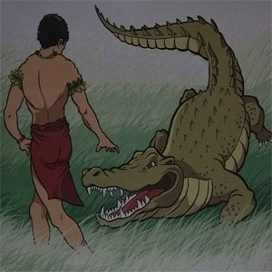

Buaya Ajaib
( Cerita Rakyat Papua )
Dahulu kala, di tepaian sungai Tami di Irian Jaya, ada sepasang suami istri yang menantikan kehadiran seorang anak. Sang suami bernama Towjatuwa, ia sangat gelisah karena istrinya yang sedang hamil tua mengalami kesulitan ketika akan melahirkan. Hanya ada satu cara untuk membantu istrinya melahirkan, yaitu dengan mengoperasinya. Menggunakan batu tajam dari sungai Tami. Ketika ia sedang sibuk mencari batu tajam, tiba-tiba muncul seekor buaya besar di depannya. Towjatuwa sangat kaget, ia sangat ketakutan dan hampir pingsan.
Buaya besar itu berjalan mendekati Towjatuwa. Langkahnya pelan tapi pasti. Namun saat ia hendak melarikan diri, buaya tersebut menyapanya. Suaranya ramah dan bersahabat, tidak seperti wajahnya yang menyeramkan. 
“Jangan Takut! Maafkan aku jika mengagetkanmu. Namaku Wituwe. Siapa namu dan apa yang kamu cari di sungai ini?” tanya buaya.
“Namaku Towjatuwa. Aku disini sedang mencari batu tajam untukmembantu istriku melahirkan,” jawab Towjatuwa ketakutan.
“kau tidak usah khawatir Towjatuwa. Aku akan menolong istrimu melahirkan.” Kata buaya ajaib itu.
Towjawa merasa senang mendengar ucapan sang buaya. Ia pun kembali ke rumah dan menceritakan pertemuannya dengan buaya ajaib kepada istrinya. Esok hari, perut istri Towjatuwa terasa sakit. Towjatuwa sangat panik, ia menunggu- nunggu kedatangan si Buaya ajaib. Namun disaat-saat terakhir, ketika sudah tak kuat menahan rasa sakit, buaya ajaib tiba-tiba muncul di hadapannya. Dengan kesaktiannya, Watuwe membantu proses persalinan istri Towjatuwa. Akhirnya istri bisa melahirkan ananknya dengan selamat. Towjatuwa merasa lega dan bahagia. Bayinya lahir dengan sehat dan diberi nama Naarrowra.
Towjatuwa sangat berterima kasih kepada Buaya ajaib. Si Buaya ajaib hanya berpesan, “Towjatuwa, kau dan keturunanmu jangan ada yang membunuh atau memakan daging buaya. Jika kau langgar pantangangan ini, kau dan keturunanmu akan mati!”. Towjatuwa dan anak keturunannya memenuhi janji. Mereka bukan hanya melestarikan buaya di sungai Tami, hewan-hewan lain di sekitar sungai Tami juga tidak mereka ganggu demi menghormati buaya ajaib.